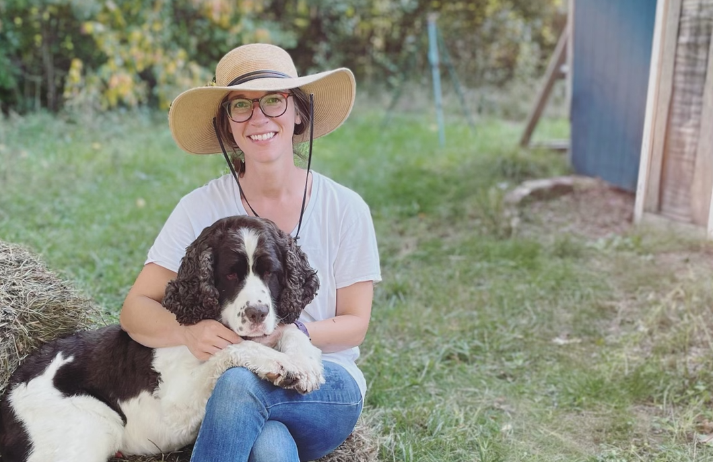

About Sister Hawk Farm
Sister Hawk Farm is a small woman-run farm in Sand Lake, Michigan started in 2018 by Niki Kalvaitis.
Niki runs the farm with the help of her two kids, Elliott and Oliver, and husband Jason. Our focus is on being the best stewards we can for both our animals and our land. Whether it’s meat animals, laying hens, or bees, we always prioritize animal welfare over everything else.
Using regenerative agriculture practices and ethical animal care, we strive to provide our community with the most nourishing products we can.
Order/Contact
You may order from us by filling out our online form. Click here to view the form.